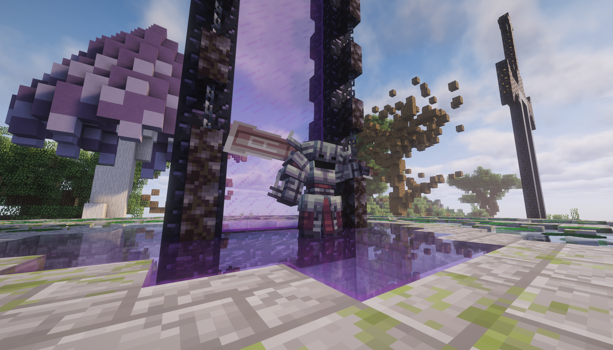
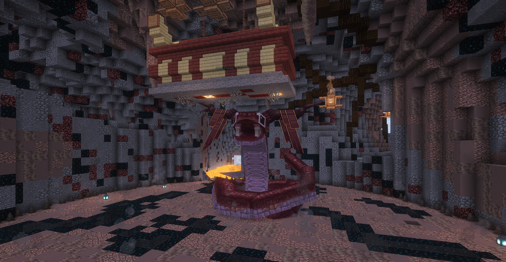
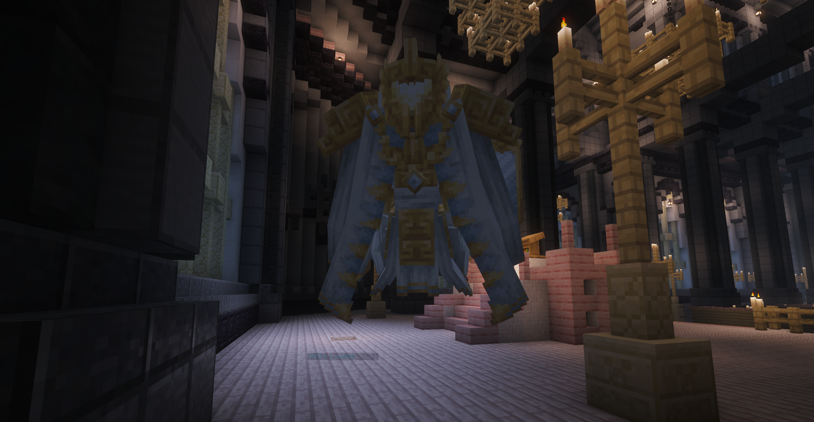
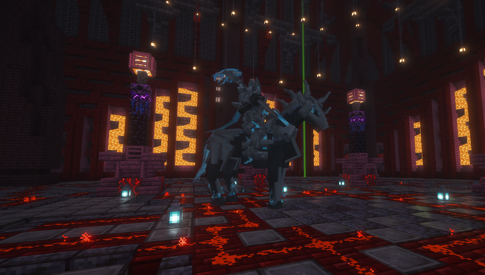

Starfall Town Guide
精英挑战 / EliteMobs
精英怪、地下城、精英币和装备成长的玩家说明。
先看这里
先学什么
先记住战斗前准备：食物、药水、宠物、基础装备，缺一项都容易翻车。
先做什么
先从普通精英怪打起，再挑战 Boss 和地下城，不要一开始就冲高等级区域。
重点提醒
精英币、任务和 Boss 掉落都很重要，战前一定看清奖励和装备 lore。
学完以后
你就能理解精英怪、地下城、Boss 装备和精英币这套完整成长路线。
这个玩法是什么
EliteMobs 会让世界中出现更强的精英怪、特殊地下城、任务与精英币奖励。它适合想刷装备、挑战怪物和赚取精英币的玩家。
快速上手
- 先从低等级区域或普通精英怪开始，不要直接挑战高等级怪。
- 击杀精英怪会获得精英币、装备、材料或任务进度。
- 打开 EliteMobs 菜单查看任务、商店、传送和装备相关内容。
- 装备坏了或属性不合适时，按服务器设置处理，不要盲目丢弃重要装备。
- 多人挑战更安全，Boss 和地下城建议组队。
常用概念
| 概念 | 说明 |
|---|---|
| 精英币 | EliteMobs 的主要货币，用于商店、修理或系统内容。 |
| 精英怪 | 比普通怪更强，有词缀、等级和技能。 |
| 地下城 | 固定挑战区域，通常有更高收益和风险。 |
| 任务 | 按要求击杀、探索或提交物品，获得额外奖励。 |
战斗建议
轻 RPG 服务器不追求秒杀数值，推荐准备料理、药水、宠物和基础装备后再挑战高等级内容。
安全提醒
精英怪强度会随等级提高。背包里准备食物、药水和回城方式，再进入高风险区域。
四大额外 Boss 图鉴
下面四张图分别对应服务器里的四个额外 Boss。点击战斗前先认识它们的场景和风格，再决定是否组队挑战。




四大额外 Boss 与特殊装备
服务器拥有四种额外 Boss 挑战。击败它们有概率获得专属特殊装备，这些装备不只是数值更高，还能释放对应 Boss 风格的炫酷技能。
⚔
科兰斯守护者主题装备，偏近战压制与战场控制。
🐍
蛇棺娘冥婚蛇妖主题装备，偏诅咒、毒性与范围压迫。
☀
圣裁之翼天使审判主题装备，偏圣光、召唤与裁决技能。
♞
魂骑 / 骑士骑士主题装备，偏冲锋、锁定与武器连段。
Boss 装备的主动或被动技能通常有冷却时间。战斗前请看清装备 lore，不要把它当普通武器使用。